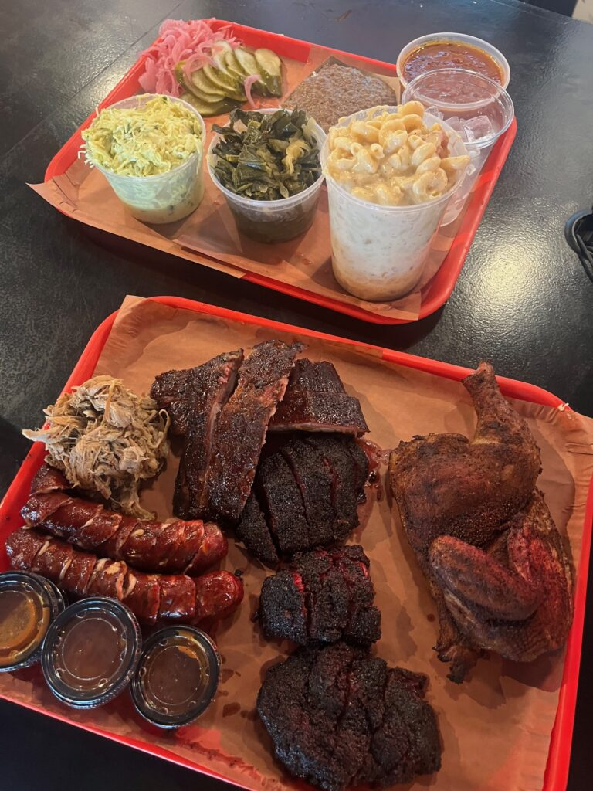

Home
Barbecue Recipe

Description
A barbecue (often shortened to BBQ) is a method of cooking food, typically meat, using a grill or open fire, often over charcoal or wood. It's also a social gathering where such food is served.
The term can refer to the cooking method, the food itself, the grill or pit used, or the event itself.
Ingredients
- 4 pounds pork spareribs
- 1 cup brown sugar
- ½ cup chile sauce
- ¼ cup ketchup
- ¼ cup soy sauce
- ¼ cup Worcestershire sauce
- ¼ cup rum
- 2 cloves garlic, crushed
- 1 teaspoon dry mustard
- 1 dash ground black pepper
- cooking spray
Steps
- Preheat the oven to 350 degrees F (175 degrees C).
- Cut spareribs into serving size portions; wrap in double thickness of foil.
- Bake in the preheated oven for 1 ½ hours. Unwrap and drain drippings. (I usually freeze drippings to use later in soups.) Place ribs in a large roasting pan.
- Mix brown sugar, chile sauce, ketchup, soy sauce, Worcestershire sauce, rum, garlic, mustard, and pepper together in a bowl. Coat ribs with sauce and marinate at room temperature for 1 hour or refrigerate for 8 hours to overnight.
- Preheat the grill to medium heat. Position the grate 4 inches above heat source; grease the grate with cooking spray.
- Cook ribs on the preheated grill for 30 minutes, basting with marinade.e